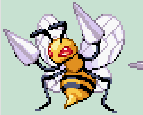
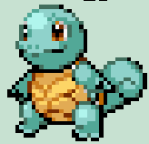

HISTÓRIA
Uma floresta está perdendo sua energia vital e corre o risco de desaparecer. A chama que mantém a vida no local está se apagando, colocando tudo em perigo. Charmander, com seu fogo especial, embarca em uma missão para restaurar esse equilíbrio. Ao longo da jornada, ele precisa recuperar chamas espalhadas pelo caminho e superar diversos desafios. No final, ao reunir toda a energia necessária, Charmander consegue reacender a vida da floresta e trazer de volta sua harmonia.
INFORMAÇÕES DO JOGO
OBJETIVO: Restaurar a energia da floresta coletando chamas.
DESAFIOS: Desviar de obstáculos e eliminar os inimigos.
FINAL: Coletar as chamas para chegar ao final e reacender a vida da floresta.
PERSONAGENS

Charmander
O protagonista que precisa restaurar a energia da floresta.

Bedrill
Um inimigo que torna a jornada mais desafiadora.

Blastoide
Um inimigo que torna a jornada mais desafiadora.